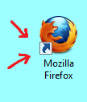

File and directory chooser manual test
Step 1: Install runtime
- If you had runtime installed from other FX sdk remove it through Windows Control Panel.
- Otherwise please install runtime: go to SDKROOT and execute javafx-2.0-beta-windows-i586.exe
N.B.: note that you can install new runtime just once for each sdk version testing.
Step 2: Run apps
Run test and choose the same file by Swing and FX file choosers. The result must be the same.
Then choose directories by Swing and FX directory choosers. The result must be the same.
Scenario only for Windows OS.
Click on "Open File FX" button. Dialog for file opening must appear. Try to find a ink-file. It should look like this (icon with arrow):

That is link on some another file. Such files are expected to be found on the Desktop, for instance. Try to open it.
A location of linked file must be shown as a result of selection.
For example:
You open link: C:\Users\user\Desktop\Mozilla Firefox.ink.
You should see the result: C:\Program Files (x86)\Mozilla Firefox\firefox.exe
So, you see not the path to the link, but the path to the linked file.
In case of successfull verification press pass, otherwise fail.